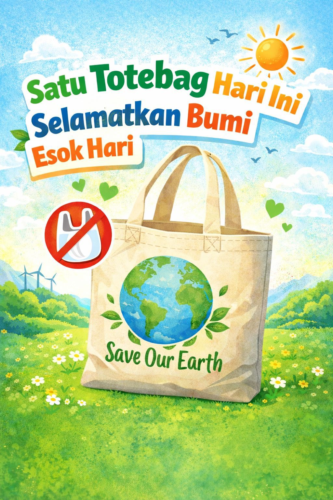

Solusi Ramah Lingkungan Pengganti Plastik
Kantong plastik sering digunakan karena dianggap praktis, murah, dan mudah didapat. Namun, kebiasaan ini justru menimbulkan masalah besar bagi lingkungan. Plastik termasuk bahan yang sangat sulit terurai dan bisa bertahan hingga ratusan tahun di alam.
Sampah plastik yang menumpuk dapat mencemari tanah, menyumbat saluran air, serta menyebabkan banjir. Selain itu, plastik yang terbawa ke laut dapat membahayakan hewan karena sering tertelan atau menjerat tubuh mereka.
Oleh karena itu, diperlukan kesadaran untuk mulai mengurangi penggunaan plastik sekali pakai dengan beralih ke alternatif yang lebih ramah lingkungan seperti totebag.

Totebag adalah tas berbahan kain yang dirancang untuk digunakan berulang kali sebagai pengganti kantong plastik. Tas ini biasanya terbuat dari bahan seperti kanvas, katun, atau bahan ramah lingkungan lainnya yang kuat dan tahan lama.
Totebag memiliki desain sederhana namun sangat fungsional. Bentuknya yang luas memungkinkan pengguna membawa berbagai barang seperti buku, belanjaan, hingga perlengkapan sehari-hari dengan lebih praktis.
Selain itu, totebag juga memiliki nilai estetika karena tersedia dalam berbagai desain menarik, mulai dari yang minimalis hingga yang penuh warna dan motif. Hal ini membuat totebag tidak hanya berfungsi sebagai alat bantu membawa barang, tetapi juga sebagai bagian dari gaya hidup.
Dengan menggunakan totebag, seseorang tidak hanya mendapatkan kemudahan, tetapi juga ikut berkontribusi dalam menjaga lingkungan. Penggunaan totebag secara konsisten dapat mengurangi ketergantungan terhadap plastik sekali pakai yang berdampak buruk bagi bumi.
Penggunaan totebag memberikan banyak manfaat, terutama dalam menjaga kelestarian lingkungan. Salah satu manfaat utamanya adalah mengurangi penggunaan plastik sekali pakai yang menjadi penyumbang terbesar pencemaran lingkungan.
Totebag dapat digunakan berulang kali dalam jangka waktu lama, sehingga lebih hemat dan efisien dibandingkan kantong plastik yang hanya digunakan sekali. Selain itu, bahan totebag yang kuat membuatnya mampu membawa beban lebih berat tanpa mudah rusak.
Dari segi lingkungan, penggunaan totebag membantu mengurangi limbah yang sulit terurai. Hal ini sangat penting untuk menjaga kebersihan tanah, sungai, dan laut dari pencemaran plastik.
Totebag juga mendukung gaya hidup ramah lingkungan atau eco-friendly yang kini semakin populer. Dengan menggunakan totebag, seseorang menunjukkan kepedulian terhadap lingkungan sekaligus menginspirasi orang lain untuk melakukan hal yang sama.
Selain itu, totebag juga praktis, mudah dilipat, dan dapat dibawa ke mana saja. Hal ini membuatnya menjadi solusi sederhana namun efektif untuk mengurangi dampak negatif penggunaan plastik.
Menggunakan totebag adalah langkah awal yang baik, namun ada beberapa hal yang perlu diperhatikan agar penggunaannya lebih maksimal. Salah satunya adalah selalu membawa totebag saat bepergian, terutama saat berbelanja, agar tidak tergoda menggunakan kantong plastik.
Selain itu, pilihlah totebag dengan bahan yang kuat dan berkualitas agar dapat digunakan dalam jangka waktu lama. Semakin lama totebag digunakan, semakin besar dampaknya dalam mengurangi sampah plastik.
Untuk perawatan, totebag sebaiknya dicuci secara rutin agar tetap bersih dan higienis. Gunakan sabun lembut dan hindari penggunaan bahan kimia yang terlalu keras agar tidak merusak serat kain.
Setelah dicuci, jemur totebag di tempat yang teduh agar warnanya tidak cepat pudar. Hindari menjemur di bawah sinar matahari langsung terlalu lama.
Dengan penggunaan dan perawatan yang tepat, totebag dapat menjadi solusi jangka panjang dalam mengurangi sampah plastik sekaligus menjaga lingkungan tetap bersih dan sehat.